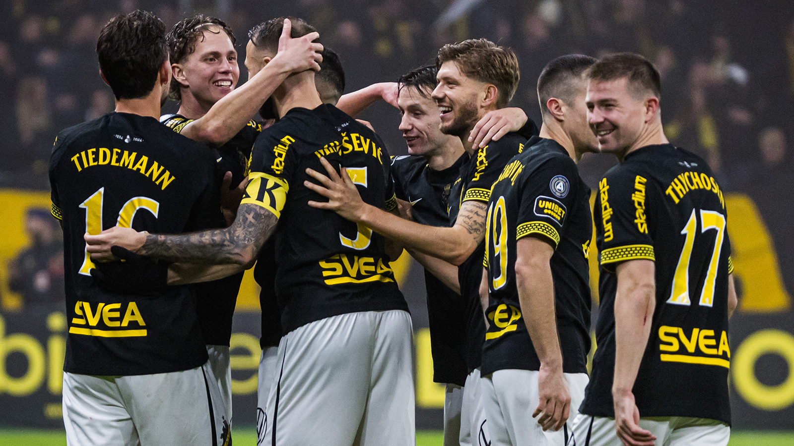
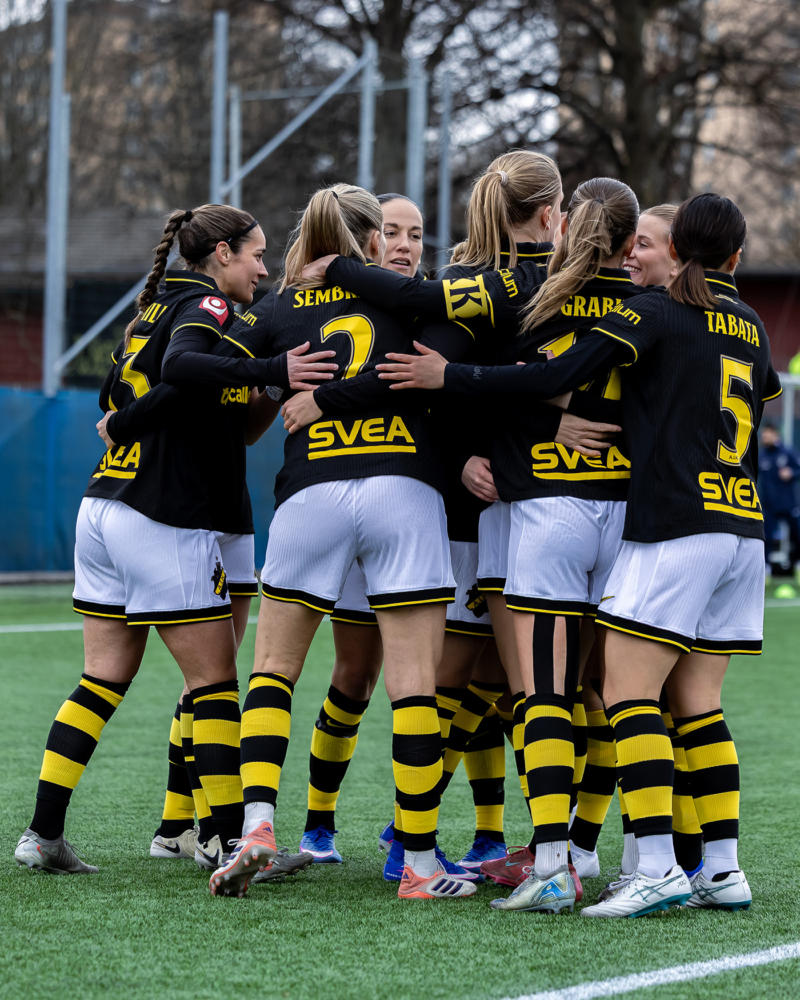
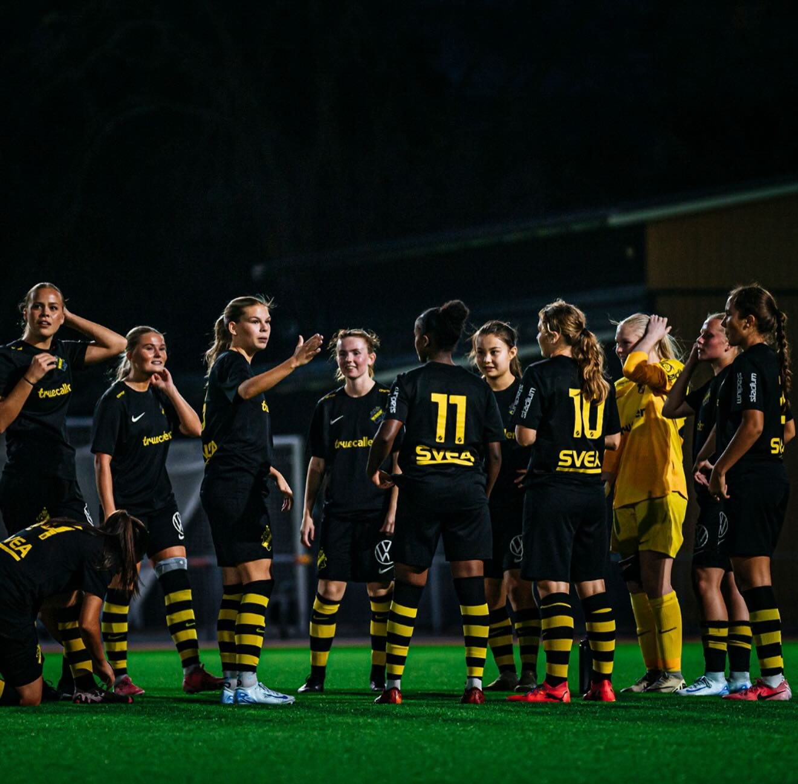

Sveriges största fotbollsklubb
edan 1891 har AIK varit den ledande kraften i svensk fotboll. Med basen i Solna och hemmaplan på Strawberry Arena fortsätter vi att skriva historia.
edan 1891 har AIK varit den ledande kraften i svensk fotboll. Med basen i Solna och hemmaplan på Strawberry Arena fortsätter vi att skriva historia.
AIK:s herrlag tävlar i Allsvenskan och kämpar alltid i toppen. Med en av landets starkaste trupper och ett enormt stöd från läktarna siktar vi alltid mot guldet.

Vårt damlag representerar den svarta och gula tröjan med stolthet i seriespelet och är en central del av klubbens framgångar och framtid.

AIK:s ungdomsakademi är känd för att fostra internationella storspelare. Vi investerar i framtiden för att behålla vår plats i toppen.
